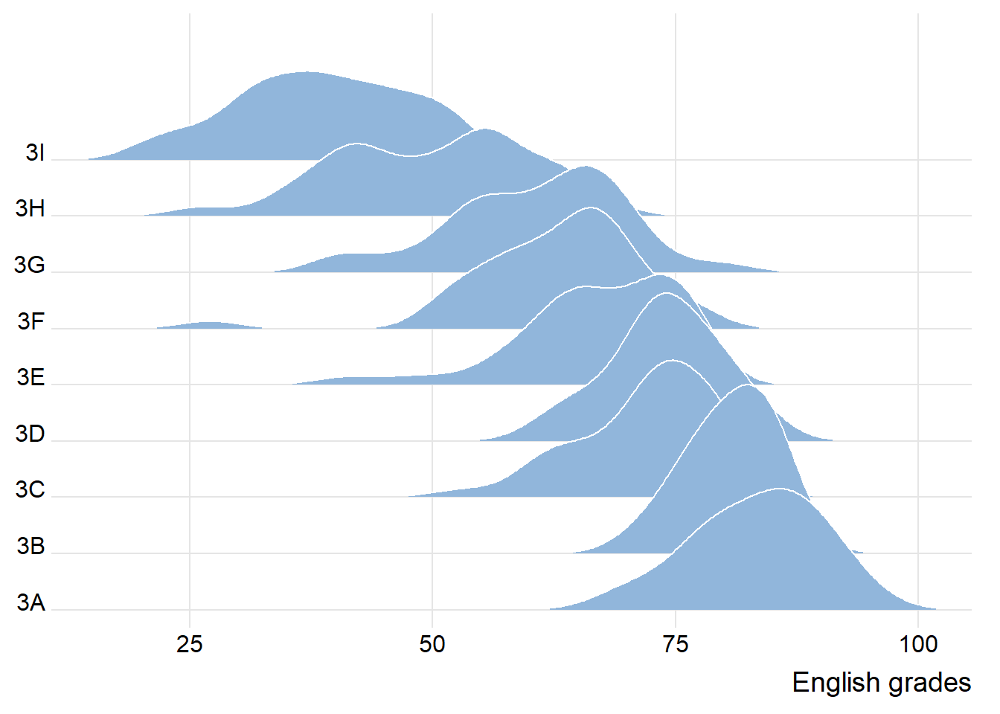
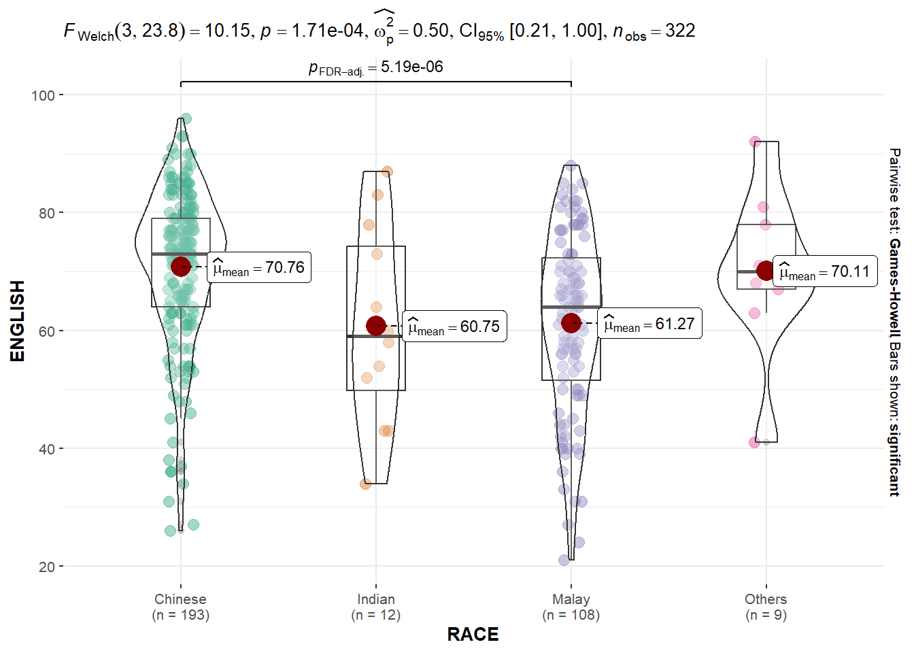

pacman::p_load(tidyverse, ggdist, ggridges, ggthemes, colorspace)Hands-on Exercise 4A
Visualising Distribution
1 Overview
We have learnt to visualise distribution using histogram, probability density curve (pdf), boxplot, notch plot and violin plot using ggplot2. In this exercise, we will learn two relatively new statistical graphic methods for visualising distribution, namely ridgeline plot and raincloud plot using ggplot2 and its extensions.
2 Getting Started
2.1 Import and Launch R Packages
In this exercise, we will use the following R packages:
- tidyverse - a family of R packages for data science process,
- ggridges - a ggplot2 extension specially designed for plotting ridgeline plots, and
- ggdist - for visualising distribution and uncertainty
2.2 Import Data
We will use Exam_data.csv for this exercise.
exam_data <- read_csv("data/Exam_data.csv")3 Visualising Distribution with Ridgeline Plot
Ridgeline plot (sometimes called Joyplot) is a data visualisation technique for revealing the distribution of a numeric value for several groups. The distribution can be represented using histograms or density plots, all aligned to the same horizontal scale and presented with a slight overlap.
Note
- Ridgeline plots make sense when the number of groups to represent is medium to high, and thus a classic window separation would take to much space. Indeed, the fact that groups overlap each other allows to use space more efficiently. If you have less than 5 groups, dealing with other distribution plots is probably better.
- It works well when there is a clear pattern in the result, like if there is an obvious ranking in groups. Otherwise group will tend to overlap each other, leading to a messy plot not providing any insight.
3.1 Plotting ridgeline graph: ggridges method
There are several ways to plot ridgeline plot with R. In this section, we will learn how to plot ridgeline plot by using ggridges package. The ggridges package provides two main geom to plot gridgeline plots, they are: geom_ridgeline() and geom_density_ridges(). The former takes height values directly to draw the ridgelines, and the latter first estimates data densities and then draws those using ridgelines.
The ridgeline plot below is plotted using geom_density_ridges().
ggplot(data = exam_data,
aes(x = ENGLISH, y = CLASS)) +
geom_density_ridges(
scale = 3, # scales height of ridgelines
rel_min_height = 0.01,
fill = lighten("#7097BB", .3),
color = "white"
) +
scale_x_continuous(
name = "English grades",
expand = c(0,0)
) +
scale_y_discrete(name = NULL,
expand = expansion(add = c(0.2, 2.6))) +
theme_ridges()
3.2 Varying colours along the x-axis
Sometimes we would like to have the area under a ridgeline not filled with a single solid color but rather with colors that vary in some form along the x axis. This effect can be achieved using geom_ridgeline_gradient() or geom_density_ridges_gradient(). Both geoms work just like geom_ridgeline() and geom_density_ridges(), except that they allow for varying fill colors. However, they do not allow for alpha transparency in the fill. For technical reasons, we can have changing fill colors or transparency but not both
ggplot(data = exam_data,
aes(x = ENGLISH, y = CLASS, fill = stat(x))) +
geom_density_ridges_gradient(
scale = 3,
rel_min_height = 0.01) +
scale_fill_viridis_c(name = "Temp. [F]",
option = "C") +
scale_x_continuous(
name = "English grades",
expand = c(0, 0)
) +
scale_y_discrete(name = NULL,
expand = expansion(add = c(0.2, 2.6))) +
theme_ridges()
3.3 Mapping probabilities directly onto colour
Besides providing additional geom objects to support the need to plot ridgeline plot, ggridges package also provides a stat function called stat_density_ridges() that replaces stat_density() of ggplot2.
Figure below is plotted by mapping the probabilities calculated using stat(ecdf) which represent the empirical cumulative density function for the distribution of English score.
ggplot(data = exam_data,
aes(x = ENGLISH, y = CLASS, fill = 0.5-abs(0.5-stat(ecdf)))) +
stat_density_ridges(geom = "density_ridges_gradient",
calc_ecdf = TRUE) +
scale_fill_viridis_c(name = "Tail probability",
direction = -1) +
theme_ridges()
Note
It is important include the argument calc_ecdf = TRUE in stat_density_ridges().
3.4 Ridgeline plots with quantile lines
Using geom_density_ridges_gradient(), we can colour the ridgeline plot by quantile, via the calculated stat(quantile) aesthetic shown in the figure below.
ggplot(data = exam_data,
aes(x = ENGLISH,
y = CLASS,
fill = factor(stat(quantile))
)) +
stat_density_ridges(
geom = "density_ridges_gradient",
calc_ecdf = TRUE,
quantiles = 4, # we can also set quantile=2 to only show median
quantile_lines = TRUE) +
scale_fill_viridis_d(name = "Quartiles") +
theme_ridges()
Instead of using number to define the quantiles, we can also specify quantiles by cut points such as 2.5% and 97.5% tails to colour the ridgeline plot as shown in the figure below.
ggplot(data = exam_data,
aes(x = ENGLISH,
y = CLASS,
fill = factor(stat(quantile))
)) +
stat_density_ridges(
geom = "density_ridges_gradient",
calc_ecdf = TRUE,
quantiles = c(0.025, 0.975)
) +
scale_fill_manual(
name = "Probability",
values = c("#FF0000A0", "#A0A0A0A0", "#0000FFA0"),
labels = c("(0, 0.025]", "(0.025, 0.975]", "(0.975, 1]")
) +
theme_ridges()
4 Visualising Distribution with Raincloud Plot
Raincloud Plot is a data visualisation techniques that produces a half-density to a distribution plot. It gets the name because the density plot is in the shape of a “raincloud”. The raincloud (half-density) plot enhances the traditional box-plot by highlighting multiple modalities (an indicator that groups may exist). The boxplot does not show where densities are clustered, but the raincloud plot does.
In this section, we will learn how to create a raincloud plot to visualise the distribution of English score by race. It will be created using functions provided by ggdist and ggplot2 packages.
4.1 Plotting a Half-eye graph
First, we will plot a Half-Eye graph using stat_halfeye() of ggdist package. This produces a Half Eye visualisation, which contains a half-density and a slab-interval.
ggplot(data = exam_data,
aes(x = RACE, y = ENGLISH)) +
stat_halfeye(adjust = 0.5,
justification = -0.2,
.width = 0,
point_colour = NA)
Note
We removed the slab interval by setting .width = 0 and point_colour = NA.
4.2 Adding boxplot with geom_boxplot()
Next, we will add the second geometry layer using geom_boxplot() of ggplot2. This produces a narrow boxplot. We reduce the width and adjust the opacity.
ggplot(data = exam_data,
aes(x = RACE,
y = ENGLISH)) +
stat_halfeye(adjust = 0.5,
justification = -0.2,
.width = 0,
point_colour = NA) +
geom_boxplot(width = .20,
outlier.shape = NA)
4.3 Adding dotplot with stat_dots()
Next, we will add the third geometry layer using stat_dots() of ggdist package. This produces a half-dotplot, which is similar to a histogram that indicates the number of samples (number of dots) in each bin. We select side = “left” to indicate we want it on the left-hand side.
ggplot(data = exam_data,
aes(x = RACE,
y = ENGLISH)) +
stat_halfeye(adjust = 0.5,
justification = -0.2,
.width = 0,
point_colour = NA) +
geom_boxplot(width = .20,
outlier.shape = NA) +
stat_dots(side = "left",
justification = 1.2,
binwidth = .5,
dotsize = 2)
4.4 Finishing touch
Lastly, coord_flip() of ggplot2 package will be used to flip the raincloud chart horizontally to give it the raincloud appearance. At the same time, theme_economist() of ggthemes package is used to give the raincloud chart a professional publishing standard look.
ggplot(data = exam_data,
aes(x = RACE,
y = ENGLISH)) +
stat_halfeye(adjust = 0.5,
justification = -0.2,
.width = 0,
point_colour = NA) +
geom_boxplot(width = .20,
outlier.shape = NA) +
stat_dots(side = "left",
justification = 1.2,
binwidth = .5,
dotsize = 1.5) +
coord_flip() +
theme_economist()